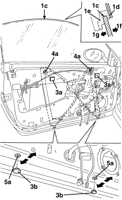

7005M25 FRONT SIDE DOOR ELECTRICALLY OPERATED WINDOW MECHANISM - CHECK POSITION AND FASTENING
- Path
- Procedures > 70 FITTINGS > 7005 PASSENGER COMPARTMENT FRONT SIDE DOORS > 7005M FRONT ELECTRIC WINDOWS > 7005M25 FRONT SIDE DOOR ELECTRICALLY OPERATED WINDOW MECHANISM - CHECK POSITION AND FASTENING
- Kind
- repair procedure (removal / refitting; the operation number is the code)
- Applies to
- all engines; all production periods
- Interactive page
- https://sloeber94.github.io/elrnDB-aBrrSpdr/en/#/946002528
Applies to: all engines; all production periods
- Correctable defect
1. Window mechanism adjustment allows correction only of the following window alignment defect:
- when the window reaches the end stop, upper profile (1c) will not fit under profile (1d) to compress spring seal (1e) (as shown in the figure) but is shifted outward in arrowed direction (1f) or inward in arrowed direction (1g).
- To correct other window alignment defects.
- Adjustment
2. If necessary, adjust the window mechanism as follows.
Op. 7005E38 FRONT SIDE DOOR INTERIOR HANDLE- R.R.
Op. 7005M14 SWITCH UNIT ON DRIVER'S FRONT DOOR - R.R.
- Or, alternatively
Op. 7005M12 PASSENGER SIDE FRONT DOOR ELECTRICALLY OPERATED WINDOW SWITCH - R.R.
Op. 7040E24 LOWER COURTESY LIGHT IN DOOR PANEL - R+R
Op. 7005E12 CORNER COVER FOR ONE FRONT SIDE DOOR, LH OR RH - R.R.
Op. 7005E11 LH OR RH FRONT DOOR INNER PANEL - R+R WITH FOULING PARTS REMOVED
Op. 7005A04 FRONT SIDE DOOR WATER GUARD PROTECTION - R.R. OR POSITION WITH DOOR PANEL REMOVED
Op. 5570T90 FRONT SPEAKER (ONE), LEFT OR RIGHT - R.R
3. Remove adhesive protection (3a) and covers (3b) from the access holes to the window mechanism fastenings.
4. Slightly loosen nuts (4a).
5. Slightly loosen bolts (5a) and adust the glass position using the slots.
Tighten bolts (5a) and nuts (4a) and check the resulting setting.

Applies to: all engines; all production periods
- If necessary, adjust the window.
- Apply the adhesive protection and covers to the fastening access holes.
- Refit the removed parts.
- Check that the window is working properly.
Topics linked from this page (9)
- 5570T90 FRONT SPEAKER (ONE), LEFT OR RIGHT - R.R
- 7005A04 FRONT SIDE DOOR WATER GUARD PROTECTION - R.R. OR POSITION WITH DOOR PANEL REMOVED
- 7005D11 LOWERING WINDOW (ONE), LEFT OR RIGHT FOR FRONT SIDE DOOR - CHECK SLIDING - INCLUDES POSITIONING GUIDES, POSITIONING AND FASTENING WINDOW SUPPORT TO CONTROL
- 7005E11 LH OR RH FRONT DOOR INNER PANEL - R+R WITH FOULING PARTS REMOVED
- 7005E12 CORNER COVER FOR ONE FRONT SIDE DOOR, LH OR RH - R.R.
- 7005E38 FRONT SIDE DOOR INTERIOR HANDLE- R.R.
- 7005M12 PASSENGER SIDE FRONT DOOR ELECTRICALLY OPERATED WINDOW SWITCH - R.R.
- 7005M14 SWITCH UNIT ON DRIVER'S FRONT DOOR - R.R.
- 7040E24 LOWER COURTESY LIGHT IN DOOR PANEL - R+R
Topics that link to this page (4)
- S062 FRONT DOORS CREAKING
- 7005A10 FRONT SIDE DOOR - ADJUST STRIKER AND ADAPT SEAL IF NECESSARY
- 7005D11 LOWERING WINDOW (ONE), LEFT OR RIGHT FOR FRONT SIDE DOOR - CHECK SLIDING - INCLUDES POSITIONING GUIDES, POSITIONING AND FASTENING WINDOW SUPPORT TO CONTROL
- 7005M26 ELECTRIC WINDOW MECHANISM FOR ONE FRONT DOOR LH OR RH - R.R